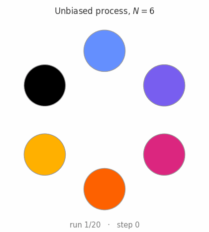
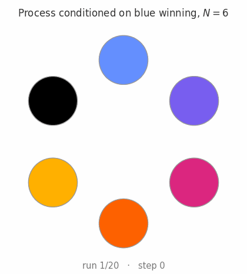

Let us consider the following problem, which is closely related to the Moran process [5], or equivalently the voter model on the complete graph [1, 4]. Consider a box with $N$ balls, each painted with a different colour. Then, pick two balls without replacement, and paint the first one the same colour as the second one. What is the expected number of steps until your box consists of balls of the same colour? Running a simulation reveals that for $N$ balls, the expected number of steps is $(N-1)^2$. But how to prove this?

Begin by letting $X^c(t)$ denote the number of balls of colour $c\in [N]$ at time $t$. It is clear that if $X^c(t) = n$, then $X^c(t+1) \in \{n, n-1, n+1 \}$, and the probability of losing or gaining one more ball is the same, equal to $\frac{n}{N} \frac{N-n}{N-1}$. So the individual processes $X^c$ (which are all identically distributed) are easy to describe. But the hitting time $T$ mixes them together, making the analysis a bit complicated, and here is where the Doob transform makes its entry.
First, note that the probability of ending up at either colour is the same by symmetry (assuming we already know that $\mathbb E(T)$ is finite almost surely), and thus equal to $N^{-1}$. Moreover, $$ \mathbb E(T) = N^{-1}\sum_{c\in [N]} E(T \mid \text {$c$ wins}) = E(T \mid \text {$c_0$ wins}) $$ where $c_0$ is a particular colour, again by symmetry. So all we need is to compute the same expected value, but for a process which we know will always end up at $c_0$. In other words, we need to deal with a conditional hitting time. This is precisely what we can do using the Doob transform! We will simply slightly change the distribution of $X^c(t)$ so that $$ \mathbb E(T \mid \text {$c$ wins and $X^c(0) = 1$} ) = \widetilde{\mathbb E}(T \mid X^c(0) = 1) $$ where $\mathbb E$ is computed under the new measure.
The Doob $h$-transform [2] is a recipe for turning a Markov chain into the chain obtained by conditioning it to do something; for textbook treatments see [3, 6]. Let $X(t)$ be a Markov chain on some state space $S$ with transition matrix $P$, so that $$P(x,y) = \mathbb P(X(t+1) = y \mid X(t) = x).$$ Suppose $h\colon S \to [0,\infty)$ is a nonnegative function that is harmonic at every non-absorbing state, meaning $$ (Ph)(x) = \sum_{y\in S} P(x,y)\, h(y) = h(x). $$ Then, at every state $x$ with $h(x) > 0$ we may define a new transition matrix by tilting the old one: $$ \widetilde P(x,y) = \frac{h(y)}{h(x)}\, P(x,y). $$ Since $h$ is harmonic, we obtain a stochastic matrix, and the chain $\widetilde X$ governed by $\widetilde P$ is called the Doob transform of $X$ by $h$.
In our case, the useful choice of $h$ is a hitting probability. Fix a target set $A \subseteq S$ of states and let $$ h(x) = \mathbb P(\text{the chain is absorbed at $A$ starting from $x$}). $$ By a one-step decomposition [6] this $h$ is harmonic away from the absorbing states, and the Doob transform $\widetilde P$ is precisely the law of the original chain conditioned on the event that it ends up in $A$. Indeed, for any path $(x_0, x_1, \dots, x_t)$ the conditional probability telescopes $$ \mathbb P\big(X(1) = x_1,\dots, X(t) = x_t \mid X(0) = x_0,\ \text{end in } A\big) = \prod_{s=0}^{t-1} \frac{h(x_{s+1})}{h(x_s)}\, P(x_s, x_{s+1}), $$ because the intermediate factors $h(x_1),\dots,h(x_{t-1})$ cancel and only the endpoints survive. So conditioning on the far-off event "we eventually reach $A$" is, step by step, nothing more than reweighting each transition by the ratio $h(y)/h(x)$.
Applying it to our case, we first need to compute $h(n)$, the probability of ending up at our favourite colour $c_0$ only, provided we start with $n < N$ balls of colour $c_0$. Obviously $h(0)=0$ and $h(N)=1$, and because of chain is symmetric, we see that the condition that $h$ be harmonic is $$h(n) = \frac 12 h(n+1) + \frac 12 h(n-1),$$ so that $h(n) = \frac nN$. Reweighing the chain using this $h$ leads us to the transition probabilities $$ p^{\uparrow}(n) = \frac{N-n}{N(N-1)} (n+1),\qquad p^{\downarrow}(n) = \frac{N-n}{N(N-1)} (n-1)\\ p^{\circlearrowleft}(n) = 1- 2n\frac{N-n}{N(N-1)} \\ $$ where we now clearly see that the chain is biased to push up, as it should be.

Using this new chain, let $e(n) = \widetilde{\mathbb E}(T \mid X^c(0) = n)$ and note that $$ e(n) = 1 + p^{\uparrow}(n) e(n+1) + p^{\downarrow}(n) e(n-1) + p^{\circlearrowleft}(n) e(n) $$ or, what is the same, that $$ e(n) = w(n) + q^{\uparrow}(n) e(n+1) + q^{\downarrow}(n) e(n-1) $$ where $w(n) = (p^{\uparrow}(n)+p^{\downarrow}(n))^{-1}$ is the average time spent at the loop, and $q$ is obtained by normalizing the $p$ probabilities, so that $$ q^{\uparrow}(n) = \frac{1}{2} + \frac 1 {2n},\qquad q^{\downarrow}(n) = \frac{1}{2} - \frac 1 {2n},\qquad w(n) = 2n\frac{N-n}{N(N-1)}. $$ Of course, we are after $e(1)$.
As a concrete illustration, for $N=6$ the tridiagonal system $(I-\tilde P)\mathbf e = \mathbf 1$ is: $$ \begin{pmatrix} 1/3 & -1/3 & & & \\ -2/15 & 8/15 & -2/5 & & \\ & -1/5 & 3/5 & -2/5 & \\ & & -1/5 & 8/15 & -1/3 \\ & & & -2/15 & 1/3 \end{pmatrix} \begin{pmatrix} e(1)\\ e(2)\\ e(3)\\ e(4)\\ e(5)\end{pmatrix} = \begin{pmatrix}1\\1\\1\\1\\1\end{pmatrix} $$ If we now use the usual algorithm to solve tridiagonal systems, something good happens: the $c'$ coefficients are all $-1$, and so the back-substitution to solve for $\mathbf e$ leads to $$e(1) = \sum_{n=1}^{N-1} d(n), \qquad d(n) := e(n)-e(n+1)$$ with $$ d(n) = \frac{N(N-1)}{(N-n)(n+1)} + \frac{n-1}{n+1}\,d(n-1), \qquad d(1) = \frac{N}{2} $$ Note that $d(1) = e(1) - e(2)$ can be computed from the original recursion and is equal to $w(1)$. A little bit of algebra reveals that $$d(n) = \frac{N}{n(n+1)} + \frac{N(N-1)}{n(n+1)}\sum_{j=2}^{n}\frac{j}{N-j}$$ and the sum collapses to $(N-1)^2$.
The computation above gave us $e(1)$, but with a little more work the same ideas give a closed formula for every $e(n)$. The key observation (which we already made) is that the differences $d(n) = e(n) - e(n+1)$ satisfy a first order linear recurrence, and those can be solved systematically. Indeed, rearranging the one-step equation for $e(n)$ gives $$ p^{\uparrow}(n)\, d(n) = 1 + p^{\downarrow}(n)\, d(n-1), $$ which is the recursion for $d$ from the previous section written in a perhaps cleaner way.
A summation factor. Just as a first order linear ODE is solved by an integrating factor, a recurrence of this shape telescopes after multiplying through by a well-chosen summation factor: we look for positive numbers $\pi_n$ such that $$ \pi_n\, p^{\downarrow}(n) = \pi_{n-1}\, p^{\uparrow}(n-1), $$ because then $F(n) = \pi_n\, p^{\uparrow}(n)\, d(n)$ satisfies $F(n) = \pi_n + F(n-1)$, and therefore $$ F(n) = \sum_{j=1}^{n} \pi_j. $$ The defining condition only couples neighbours, so it determines $\pi_n$ up to a constant through a telescoping product: normalizing $\pi_1 = 1$, $$ \frac{\pi_n}{\pi_{n-1}} = \frac{p^{\uparrow}(n-1)}{p^{\downarrow}(n)} = \frac{n(N-n+1)}{(n-1)(N-n)} \quad\Longrightarrow\quad \pi_n = \frac{n(N-1)}{N-n}. $$ Note that $$ \pi_n\, p^{\uparrow}(n) = \frac{n(n+1)}{N}, $$ so this is precisely the multiplication by $n(n+1)$ that made the computation of $e(1)$ work — and also the reason all the $c'$ coefficients in the tridiagonal elimination came out equal to $-1$.
Remark. In probability, $\pi$ is called a reversible measure for the chain, and the relation defining it is the detailed balance equation: it says that the matrix $\widetilde P$ becomes self-adjoint with respect to the inner product weighted by $\pi$. A birth–death chain always admits such a measure, since detailed balance only constrains neighbouring states — which is why hitting times of one-dimensional chains are always explicitly summable, by the very computation we are doing here.
Solving for $d$. Writing $\frac{j}{N-j} = \frac{N}{N-j} - 1$, the sum of the summation factors is $$ F(n) = \sum_{j=1}^n \pi_j = (N-1)\sum_{j=1}^n \frac{j}{N-j} = (N-1)\left[ N\left( H_{N-1} - H_{N-n-1} \right) - n \right], $$ where $H_m = 1 + \frac 12 + \cdots + \frac 1m$ is the $m$-th harmonic number. Hence $$ d(n) = \frac{N\,F(n)}{n(n+1)} = \frac{N(N-1)}{n(n+1)} \left[ N\left( H_{N-1} - H_{N-n-1}\right) - n \right]. $$
Summing back up. Since $e(N) = 0$, we have $e(n) = \sum_{k=n}^{N-1} d(k)$. Abbreviating $g(k) = H_{N-1} - H_{N-k-1}$ and splitting $\frac{1}{k(k+1)} = \frac 1k - \frac{1}{k+1}$, this reads $$ \frac{e(n)}{N(N-1)} = N \sum_{k=n}^{N-1} g(k)\left( \frac 1k - \frac 1{k+1}\right) - \sum_{k=n}^{N-1} \frac{1}{k+1}. $$ The second sum is $H_N - H_n$. The first is handled by summation by parts, using $g(k+1) - g(k) = \frac{1}{N-k-1}$: $$ \sum_{k=n}^{N-1} g(k)\left( \frac 1k - \frac 1{k+1}\right) = \frac{g(n)}{n} - \frac{H_{N-1}}{N} + \sum_{k=n}^{N-2} \frac{1}{(k+1)(N-k-1)}, $$ and the remaining sum evaluates by partial fractions, $\frac{1}{(k+1)(N-k-1)} = \frac 1N \left( \frac{1}{k+1} + \frac{1}{N-k-1} \right)$, to $\frac 1N \left( H_{N-1} - H_n + H_{N-n-1}\right)$. Assembling the pieces, nearly everything cancels and we are left with $$ e(n) = (N-1)\left[\frac{N(N-n)}{n} \left(H_{N-1}-H_{N-n-1}\right)-1\right], $$ where the harmonic-number difference is just $\sum_{j=N-n}^{N-1} \frac 1j$. At $n=1$ this collapses to $(N-1)\left[N(N-1)\cdot\frac{1}{N-1}-1\right]=(N-1)^2$, recovering the main result, while at $n=N-1$ it gives $e(N-1) = N H_{N-1}-(N-1)$: even one step away from consensus, the conditioned chain still needs about $N\log N$ steps to finish!
Finally, since consensus with colour $c$ winning is exactly the event that $X^c$ hits $N$, and $c$ wins with probability $n_c/N$, the unconditional expected consensus time from any starting configuration with colour counts $(n_1,\dots,n_k)$ is $$ \mathbb E(T)=\frac{1}{N} \sum_{c}n_c \,e(n_c). $$ The all-distinct start ($n_c\equiv 1$) gives $N\cdot\frac 1N\,e(1)=(N-1)^2$ again, and the two-colour case reproduces the classical consensus time for the voter model on the complete graph [1].